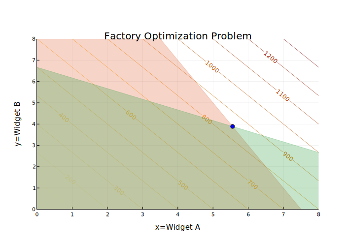

# set up objective function parameters and variables
pa = 100
pb = 75
a = range(0, 8, step=0.25)
b = range(0, 8, step=0.25)
# define objective function
f(a, b) = pa * a + pb * bf (generic function with 1 method)This tutorial will demonstrate how to use the JuMP package in Julia to solve linear optimization problems. It draws heavily from this tutorial by Jesse D. Jenkins and Michael R. Davidson.
JuMP (“Julia for Mathematical Programming”) is an open-source Julia package that adds functionality for formulating and solving a variety of optimization problems. One advantage of JuMP is that its syntax matches the typical mathematical formalism used to specify optimization problems. We will use JuMP in this class for our optimization work.
Here we will outline the basic steps for configuring JuMP, though you can also refer to the official Installation Guide.
If JuMP is not already in your environment (it will be for any of your assignments, but may not be if you’re doing something independently), you will need to install it. You will also need to select a solver and install the relevant package. Some of these are commercial, while others are open source. Solvers are also not typically universal, as different types of optimization problems use different algorithms, so be aware of what problem you’re trying to solve instead of just blindly copying code from one task to another.
For example, for the linear programming example, we will use the Clp (COIN-OR Linear Programming) solver via the Clp package. As seen on the solver table, Clp is open source (via the EPL, or Eclipse Public License) and can solve linear programs (LP). For the mixed-integer linear programming example, we will instead of the Cbc (COIN-OR Branch and Cut) solver via the Cbc package. This is also open-source (it comes from the same group as Clp) and can solve mixed-integer or binary linear programs.
Suppose we own a factory that can produce two types of widgets:
Further, we cannot build a negative number of either type of widget. This is known as a non-negativity constraint, and can be expressed as \[\begin{align} x &\geq 0\\ y &\geq 0 \end{align}\]
This isn’t a very interesting problem yet! We would simply build as much of both widgets as we could, because there are no constraints on our ability to produce. To make this more realistic, let’s suppose that both widgets are produced using the same raw material \(M\), of which we can only procure 300 units. Then, if:
But we might have another constraint: time! Each widget may take a different amount of labor to produce. For example, let’s say that
Consolidating equations (1)–(4) gives us the following constrained optimization problem: \[\begin{align} & &\max 100x + 75y\\ &\text{subject to} & \\ & & x \geq 0\\ & & y \geq 0 \\ & & 40x + 20y \leq 300\\ & & 6x + 12y \leq 80 \end{align}\]
Let’s do some plotting to examine the geometry of our optimization problem. We can do this using the Plots package in Julia.
# set up objective function parameters and variables
pa = 100
pb = 75
a = range(0, 8, step=0.25)
b = range(0, 8, step=0.25)
# define objective function
f(a, b) = pa * a + pb * bf (generic function with 1 method)# start plotting
using Plots
plotlyjs()
contour(a,b,(a,b)->f(a,b),nlevels=15, c=:heat, linewidth=10, colorbar = false, contour_labels = true) # objective function contours
title!("Factory Optimization Problem") # add title
xaxis!("x=Widget A", lims=(0, maximum(a))) # add x-axis title and limits
yaxis!("y=Widget B", lims=(0, maximum(b))) # add y-axis title and limits
xticks!(0:maximum(a)) # set x-axis ticks
yticks!(0:maximum(b)) # set y-axis ticks
areaplot!(a[a.<=11], (300 .- 40*a)./20, legend=false, opacity=0.3) # plot materials constraint feasible region
areaplot!(a[a.<=8], (80 .- 6*a)./12, legend=false, opacity=0.3) # plot time constraint feasible regionThe WebIO Jupyter extension was not detected. See the WebIO Jupyter integration documentation for more information.

We can see exactly where the solution will be, at the intersection of the feasible regions imposed by the two constraints (note how this is related to the gradient of the objective function)! Let’s now use JuMP to identify the location of this point (though we could also solve for it using linear algebra).
First, we should load JuMP and Clp.
using JuMP
using ClpTo solve our problem, first we need to define the model. The model object has lots of attributes, including the variables, constraints, solver options, etc. We create a new model using the Model() function. Since we are using the Clp solver, we need to tell JuMP to use the Clp.Optimizer solver function.
factory_model = Model(Clp.Optimizer)A JuMP Model
Feasibility problem with:
Variables: 0
Model mode: AUTOMATIC
CachingOptimizer state: EMPTY_OPTIMIZER
Solver name: ClpThere are a bunch of attributes and options that we could set, but we won’t in this example. If needed, look at the Clp.jl documentation.
Decision variables (\(x\) and \(y\) in this case) in JuMP are defined using the @variable macro. The first argument passed to @variable() is the model object, in this case, factory_model, and the second argument are bounds on that variable, created using >= and <=. JuMP will interpret the bound specification to obtain the variable name. In this case, our only bounds directly on the variables are the non-negativity constraints.
@variable(factory_model, x >= 0);@variable(factory_model, y >= 0);If we had a free (or unbounded) variable \(z\), we could declare that variable using @variable(model, z). JuMP also requires unique names for each variable, or it will throw an error. This is one place where it’s nice that Julia lets us use sub- and superscripts in variable names!
If we did want to modify the bounds after defining the variable, we could do so using the set_lower_bound and set_upper_bound functions, or we could remove them using delete_lower_bound and delete_upper_bound.
Finally, if we want to see all of the variables associated with a model, we can use the all_variables function to obtain an array.
all_variables(factory_model)2-element Vector{VariableRef}:
x
yWhen defining variables, we were able to declare constraints on their values by specifying upper and lower bounds. However, we also have other constraints, which involve multiple decision variables. These are specified using the @constraint macro. Unlike variables, we also need to pass names for each constraint. We will use time for the time constraint and materials for the materials constraint. These names must be unique.
@constraint(factory_model, time, 6x + 12y <= 80) # specify the time constrainttime : 6 x + 12 y ≤ 80.0@constraint(factory_model, materials, 40x + 20y <= 300) # materials constraintmaterials : 40 x + 20 y ≤ 300.0So far, we’ve defined the feasible region of the decision-variable domain by setting the constraints. But we need to specify our objective function to know what we are trying to minimize or maximize over this region. We define the objective function using the @objective macro. In addition to specifying the model objective and the function, we need to tell JuMP whether we want to minimize or maximize.
@objective(factory_model, Max, 100x + 75y)\[ 100 x + 75 y \]
Now, let’s look at the model specification.
print(factory_model)\[ \begin{aligned} \max\quad & 100 x + 75 y\\ \text{Subject to} \quad & 6 x + 12 y \leq 80.0\\ & 40 x + 20 y \leq 300.0\\ & x \geq 0.0\\ & y \geq 0.0\\ \end{aligned} \]
We can also get a nicely styled LaTeX version, which might be useful.
latex_formulation(factory_model)\[ \begin{aligned} \max\quad & 100 x + 75 y\\ \text{Subject to} \quad & 6 x + 12 y \leq 80.0\\ & 40 x + 20 y \leq 300.0\\ & x \geq 0.0\\ & y \geq 0.0\\ \end{aligned} \]
We won’t go into detail here, but there are other ways to define the model, which are detailed in the JuMP documentation. For example, we can specify multiple variables using @variables. Similarly, we can use @constraints to define multiple constraints at once. Or we can use loops to define multiple constraints or constraints involving many variables. We can also specify the model in vectorized syntax, which is similar to how linear programs are specified in MATLAB.
Now it’s time to solve the model and find the optimal values \((x^*, y^*)\). Since we specified the solver when we initialized factory_model, all we have to do is call the optimize! function.
optimize!(factory_model)Coin0506I Presolve 2 (0) rows, 2 (0) columns and 4 (0) elements
Clp0006I 0 Obj 0 Dual inf 175 (2)
Clp0006I 2 Obj 847.22222
Clp0000I Optimal - objective value 847.22222
Clp0032I Optimal objective 847.2222222 - 2 iterations time 0.002To find the optimal values of our decision variables, we need to query the values of the variables using value.(). We use value.() (the vectorized version of value()) because JuMP stores decision variables differently depending on their number and how they were defined. Uses the dot-syntax here works with any model specification, while the plain value() will not work if a queried decision variable is stored as a vector.
value.(x)5.555555555555555value.(y)3.8888888888888884So we can see that our optimal inputs are \[(x^*, y^*) = (5.56, 3.89)\] (and we’ll pretend that we can manufacture and sell parts of widgets).
Let’s take our previous plot and add the solution point to make sure that we got the solution we expected.
# replot the previous plot
contour(a,b,(a,b)->f(a,b),nlevels=15, c=:heat, linewidth=10, colorbar = false, contour_labels = true) # objective function contours
title!("Factory Optimization Problem") # add title
xaxis!("x=Widget A", lims=(0, maximum(a))) # add x-axis title and limits
yaxis!("y=Widget B", lims=(0, maximum(b))) # add y-axis title and limits
xticks!(0:maximum(a)) # set x-axis ticks
yticks!(0:maximum(b)) # set y-axis ticks
areaplot!(a, (300 .- 40*a)./20, legend=false, opacity=0.3) # plot materials constraint feasible region
areaplot!(a, (80 .- 6*a)./12, legend=false, opacity=0.3) # plot time constraint feasible region
# now we plot the solution that we obtained
scatter!([value.(x)],[value.(y)], markercolor="blue")
The solution \[(x^*, y^*)\] is exactly where we deduced it would be geometrically.
We can also use value.() to evaluate our constraints without manually using the equations.
value.(time)80.0value.(materials)300.0What if we also want the optimal objective value? We can obtain this using objective_value().
objective_value(factory_model)847.2222222222222We could also define other expressions via the @expression macro as functions of the decision variables and evaluate those. For example, let’s say that we wanted to know the total number of widgets we’d produce under our optimal allocation of resources.
@expression(factory_model, total_widgets, x+y)\[ x + y \]
value.(total_widgets)9.444444444444443We can identify if our model has a dual solution by calling has_duals().
has_duals(factory_model)trueIf we want to know the dual solution associated with a constraint, we use the shadow_price() function.
shadow_price(time)2.7777777777777786shadow_price(materials)2.083333333333333If the binding constraint was a variable bound, we could also query that shadow price by calling reduced_cost() on the variable.
reduced_cost(x)reduced_cost(y)-0.0In this case, the relevant shadow prices are zero because the optimum is in the interior of the domain. If we had added a strong enough upper bound on the value(s) of one or both of our decision variables (say, x <= 4), then this would be non-zero.